Exercice 1
Question 1
Il peut être intéressant d’analyser l’impact du niveau de richesse d’un pays (en utilisant le PIB par habitant comme indicateur) sur son degré de démocratie pour déterminer si les pays avec un haut niveau de richesse de ses habitants sont des modèles de démocratie ou bien si les pays pauvres sont inévitablement des dictatures. Ainsi, ce type d’étude peut permettre de valider les idées reçus ou bien de démontrer des réalités plus complexes.
Ensuite, on doit noter que la possession de données de panel est idéale pour étudier une durabilité de ce lien dans le temps. Cependant, les résultats de l’étude pourraient bien aboutir à une corrélation nulle entre ces deux facteurs car il faut prendre en compte le fait qu’énormément de facteurs rentrent en compte lorsque l’on discute du développement démocratique d’un pays, parmi cela, on pourrait évoquer des facteurs culturels ou encore la possible influence d’acteurs externes aux pays étudiés.
Enfin, si les résultats d’une telle étude étaient convaincants, qu’ils pouvaient démontrer une réelle corrélation entre les deux variables et non une simple causalité, alors cela permettrait à l’humanité de faire un grand pas dans la résolution des problèmes liés à la misère dans le monde.
Question 2
Question 3
\[fhpolrigaug_{it} = \beta_0 + \beta_1 lrgdpch_{it} + \varepsilon_{it}\]
reg<-lm(fhpolrigaug~lrgdpch,
data = Data
)| Dependent variable: | |
| fhpolrigaug | |
| lrgdpch | 0.218*** |
| (0.008) | |
| Constant | -1.211*** |
| (0.066) | |
| Observations | 1,125 |
| R2 | 0.402 |
| Adjusted R2 | 0.402 |
| Residual Std. Error | 0.274 (df = 1123) |
| F Statistic | 755.300*** (df = 1; 1123) |
| Note: | p<0.1; p<0.05; p<0.01 |
On remarque que le coefficient associé à la variable lrgdpch est significativement différent de 0, donc le PIB par tête semble bien avoir un impact sur le niveau de démocratie d’un pays, ainsi, ce premier modèle nous indique qu’une augmentation de 1% du PIB par tete contribue a une hausse d’environ 0.0022 unités du niveau de démocratie.
Il ne faut cependant pas oublier que nous avons omis plusieurs facteurs en estimant ce modèle donc cette estimation de l’impact du PIB par tête sur le niveau de démocratie a de grandes chances d’être biaisée.
Question 4
\[fhpolrigaug_{it} = \beta_0 + \beta_1 lrgdpch_{it} + \beta_2 medage_{it} + \beta_3 education_{it} + \\ \beta_4 population_{it} + \beta_5 nsave_{it} + \beta_6 laborshare_{it} + \varepsilon_{it}\]
reg<-lm(fhpolrigaug~lrgdpch+medage+education+population+nsave+laborshare,
data = Data
)| Dependent variable: | |
| fhpolrigaug | |
| lrgdpch | 0.114*** |
| (0.030) | |
| medage | 0.001 |
| (0.003) | |
| education | 0.034*** |
| (0.009) | |
| population | 0.00000*** |
| (0.00000) | |
| nsave | -0.003 |
| (0.133) | |
| laborshare | 0.323*** |
| (0.109) | |
| Constant | -0.647*** |
| (0.198) | |
| Observations | 432 |
| R2 | 0.422 |
| Adjusted R2 | 0.414 |
| Residual Std. Error | 0.262 (df = 425) |
| F Statistic | 51.725*** (df = 6; 425) |
| Note: | p<0.1; p<0.05; p<0.01 |
Ce modèle est sur données en coupe avec un nombre d’observations égal au nombre de pays présents dans la base de données multiplié par le nombre de périodes d’observations (tout en retirant les observation dont les données sont manquantes), de plus, les coefficients \(\beta\) sont les mêmes pour toutes les unités individuelles, il n’y a donc pas de variation des coefficients en fonction de l’unité observé, on peut donc affirmer que c’est un modèle poolé.
On remarque que l’effet du logarithme de PIB par tete à était divisé par deux par rapport au modèle précédent, avec un coefficient de 0.1135219.
De plus on remarque que population a un coefficient très proche de 0, il y aurait donc une absence de liaison entre la variable population et la variable fhpolrigaug que l’on cherche a expliquer, en effecutant le test de corrélation de Spearman nous obtenons un coefficient de -0.071 donc quasiemment proche de 0 , ce qui indique une indépendance et donc que la taille de la population n’a aucun effet sur le niveau de démocratie d’un pays.
On remarque de plus que la variable éducation a un impact plutôt significatif sur le modèle, on traduit donc qu’une augmentation d’une année d’éducation de la population âgée de plus de 25 ans entraine une hausse de 0.034 unité du degrés de démocratie.
Ensuite, on remarque que laborshare a un impact significatif dans ce modèle , avec un coefficient de 0.323, cela traduit donc qu’une augmentation de 1 point de pourcentage de la part du travail dans la valeur ajoutée provoque une hausse de 0.323 unité de degré de démocratie.
Enfin on notera que selon ce modèle, le taux d’épargne ainsi que l’âge médian de la population n’aurait aucun impact significatif sur le degré de démocratie.
Question 5
Ce modèle est estimé sur beaucoup moins d’observations que lors de la question 3 car il inclue d’autres variables dont la valeur est inconnue pour un certain nombre d’observations, afin d’estimer les coefficients du modèle, ces observations ne sont donc pas utilisées ce qui réduit in fine le nombre d’observations utilisées pour construire ce nouveau modèle.
Peut-être que l’inclusion de ces observations n’auraient pas changé les implications de nos résultats, cependant, ceux-ci se retrouvent inévitablement biaisés car l’exclusion de ces différentes observations impliquent la présence d’un biais de sélection et peut-être d’un biais de non-réponse dû à une des caractéristiques du pays observé. Ainsi, ces deux biais influeront sur l’estimation des paramètres et des erreurs-types et donc sur la fiabilité du modèle.
En effet, si les données manquantes pouvaient apporter des informations très importante, le fait de ne pas pouvoir les inclure dans le modèle pourrait introduire de faux signaux dans nos analyses. Il faudra donc veiller à émettre des conclusions tenant compte de ces éventuels problèmes lorsque l’on interprétera ce modèle.
Question 6
Fixed_temps<-lm(fhpolrigaug~lrgdpch+medage+education+population+nsave+laborshare+factor(year)-1,
data=Data[which(!is.na(Data$year)),]
)| Dependent variable: | ||
| fhpolrigaug | ||
| (1) | (2) | |
| lrgdpch | 0.145*** | 0.114*** |
| (0.029) | (0.030) | |
| medage | -0.003 | 0.001 |
| (0.003) | (0.003) | |
| education | 0.037*** | 0.034*** |
| (0.009) | (0.009) | |
| population | 0.00000*** | 0.00000*** |
| (0.00000) | (0.00000) | |
| nsave | -0.027 | -0.003 |
| (0.126) | (0.133) | |
| laborshare | 0.296*** | 0.323*** |
| (0.104) | (0.109) | |
| factor(year)1960 | -0.631*** | |
| (0.188) | ||
| factor(year)1965 | -0.681*** | |
| (0.190) | ||
| factor(year)1970 | -0.861*** | |
| (0.191) | ||
| factor(year)1975 | -0.904*** | |
| (0.192) | ||
| factor(year)1980 | -0.884*** | |
| (0.192) | ||
| factor(year)1985 | -0.826*** | |
| (0.192) | ||
| factor(year)1990 | -0.868*** | |
| (0.193) | ||
| Constant | -0.647*** | |
| (0.198) | ||
| Observations | 432 | 432 |
| R2 | 0.887 | 0.422 |
| Adjusted R2 | 0.883 | 0.414 |
| Residual Std. Error | 0.247 (df = 419) | 0.262 (df = 425) |
| F Statistic | 252.734*** (df = 13; 419) | 51.725*** (df = 6; 425) |
| Note: | p<0.1; p<0.05; p<0.01 | |
En ajoutant des effets fixes temporels, le modèle prend en compte les variations annuelles spécifiques, ce qui peut améliorer la précision des estimations en éliminant une partie de la variance due à des facteurs temporels non observés. Cela peut rendre les résultats plus fiables et permet une meilleure interprétation des effets des variables explicatives sur la variable dépendante.
L’interprétation des coefficients des variables explicatives reste similaire, mais les effets fixes temporels permettent de contrôler les variations annuelles non observées. On pourrait interpréter les coefficients comme les effets moyens des variables explicatives sur la variable dépendante, en tenant compte des variations spécifiques à chaque année.
En somme l’ajout d’effets fixes temporels permet de capter tout choc eventuelles, liées a une année particuliére , par exemple la présence d’une guerre dans certains pays ou tout évènement suffisament important pouvant influencer significativement la vie d’un ou plusieurs pays.
Concernant l’interpretation :
Pour la variable
lrgdpchon remarque une hausse de son coeffficient par rapport au cas sans effets fixes temporels, avec un coefficient de 0.145 ;De meme
éducationvoit aussi son coefficient augmenter, en passant de 0.034 à 0.037 ;Cependant l’impact de la variable
laborsharesur le degré de démocratie diminue , ce qui veut dire que sans les effets fixes temporels, le modèle sur-estimait l’impact de la part de travail dans la valeur ajouté sur le niveau de démocratie d’un pays ;Il faut aussi noter que l’introduction d’effets fixes temporels indiquent un degré de démocratie moyen très différent en fonction de la période de temps étudiée. Par exemple, à autres facteurs fixés, on peut relever que le niveau de démocratie moyen dans les années 90 est en moyenne inférieur au niveau de démocratie moyen dans les années 60 de 0.237 unité. Il est aussi intéressant de constater que selon ce modèle, le degré de démocratie était en moyenne en plus élevé dans les années 60 (à autres facteurs fixés).
Ces quelques remarques sont très intéressantes pour l’étude car la prise en compte de la temporalité de nos données impliquent des résultats différents. D’ailleurs on pourra aussi noter que la qualité d’ajustement de ce dernier modèle est plus élevé.
Question 7
La non-correction des erreurs-types dans les OLS sur le modèle poolé causerait différents problèmes dans notre modèle.
Tout d’abord, cela signifierait que l’on ne prendrait pas en compte l’autocorrélation des erreurs ou sérialité. En effet, Les données de panel présentent souvent une corrélation entre les observations successives pour la même unité au fil du temps. Or, si cette autocorrélation n’est pas prise en compte, les erreurs-types standard non corrigées peuvent sous-estimer l’incertitude entourant les coefficients estimés.
De plus, cela nous amèneraient à ne pas prendre en compte l’eventuelle hétéroscédasticité du modèle, et donc à utiliser des estimateurs qui ne seraient pas BLUE, ce qui implique aussi que les tests de significativé de ces coefficients nous conduiraient à très souvent rejeter l’hypothèse de nullité des coefficients dû à la sous-estimation des erreurs-types. Cette dernière information est cruciale car cela signifierait que ne pas corriger les erreurs-types pourraient nous amener à identifier un impact significatif d’une des variables explicative sur le niveau de démocratie alors que cet impact pourrait être nul.
Enfin, il ne faut pas oublier une éventuelle corrélation entre les observations des différents pays. Donc si cette corrélation n’est pas correctement prise en compte, les erreurs-types standard peuvent être biaisées.
En résumé Il est nécessaire de corriger les erreurs-types dans les OLS sur le modèle poolé afin de prévenir toute hétéroscédasticité pouvant biaiser les résultats. De plus, la nature temporelle des données de panel impose le risque de dépendance d’une variable à sa valeur passée, qui engendre aussi un biais.
On corrige les erreurs-types ainsi :
cov_c<-vcovHC(Fixed_temps,method="arellano")
robust_se_c<-sqrt(diag(cov_c))et on obtient les résultats suivants :
| Dependent variable: | |
| fhpolrigaug | |
| lrgdpch | 0.145*** |
| (0.031) | |
| medage | -0.003 |
| (0.004) | |
| education | 0.037*** |
| (0.009) | |
| population | 0.00000** |
| (0.00000) | |
| nsave | -0.027 |
| (0.123) | |
| laborshare | 0.296** |
| (0.116) | |
| factor(year)1960 | -0.631*** |
| (0.198) | |
| factor(year)1965 | -0.681*** |
| (0.200) | |
| factor(year)1970 | -0.861*** |
| (0.202) | |
| factor(year)1975 | -0.904*** |
| (0.204) | |
| factor(year)1980 | -0.884*** |
| (0.206) | |
| factor(year)1985 | -0.826*** |
| (0.205) | |
| factor(year)1990 | -0.868*** |
| (0.202) | |
| Observations | 432 |
| R2 | 0.887 |
| Adjusted R2 | 0.883 |
| Residual Std. Error | 0.247 (df = 419) |
| F Statistic | 252.734*** (df = 13; 419) |
| Note: | p<0.1; p<0.05; p<0.01 |
On remarque que l’impact de la variable laborshare a perdu en significativité aprés la correction des erreurs type, il y avait donc une sur-interprétation de la significativité du coefficient. De plus l’impact des variables education et population perdent elles aussi en significativité.
Question 8
On conserve les effets temporels dans le modèle ainsi on estime le modèle à effets aléatoires suivant :
\[fhpolrigaug_{it} = \mu + \beta_1 lrgdpch_{it} + \beta_2 medage_{it} + \beta_3 education_{it} + \\ \beta_4 population_{it} + \beta_5 nsave_{it} + \beta_6 laborshare_{it} + \lambda_{t} + u_{it} \\ \text{où} \ u_{it}=\alpha_{i}+\varepsilon_{it}\]
avec le scalaire \(\mu\) non-aléatoire rajouté pour que les effets aléatoires \(\alpha_i\) soient normalisés de manière à obtenir une moyenne nulle.
composed<-plm(fhpolrigaug~lrgdpch+medage+education+population+nsave+laborshare+factor(year)-1,
data=Data,
model="random",
effect = "individual",
index = c("code","year"))
cov_f<-vcovHC(composed,method="arellano")
robust_se_f<-sqrt(diag(cov_f))| Dependent variable: | |
| fhpolrigaug | |
| lrgdpch | 0.132*** |
| (0.047) | |
| medage | -0.004 |
| (0.005) | |
| education | 0.043*** |
| (0.013) | |
| population | 0.00000 |
| (0.00000) | |
| nsave | -0.090 |
| (0.183) | |
| laborshare | 0.212 |
| (0.138) | |
| factor(year)1960 | -0.485* |
| (0.283) | |
| factor(year)1965 | -0.533* |
| (0.288) | |
| factor(year)1970 | -0.697** |
| (0.283) | |
| factor(year)1975 | -0.742** |
| (0.289) | |
| factor(year)1980 | -0.714** |
| (0.293) | |
| factor(year)1985 | -0.666** |
| (0.292) | |
| factor(year)1990 | -0.718** |
| (0.287) | |
| Observations | 432 |
| R2 | 0.223 |
| Adjusted R2 | 0.201 |
| F Statistic | 1,020.033*** |
| Note: | p<0.1; p<0.05; p<0.01 |
Question 9
| Dependent variable: | ||
| fhpolrigaug | ||
| OLS | panel | |
| linear | ||
| (1) | (2) | |
| lrgdpch | 0.145*** | 0.132*** |
| (0.031) | (0.047) | |
| medage | -0.003 | -0.004 |
| (0.004) | (0.005) | |
| education | 0.037*** | 0.043*** |
| (0.009) | (0.013) | |
| population | 0.00000** | 0.00000 |
| (0.00000) | (0.00000) | |
| nsave | -0.027 | -0.090 |
| (0.123) | (0.183) | |
| laborshare | 0.296** | 0.212 |
| (0.116) | (0.138) | |
| factor(year)1960 | -0.631*** | -0.485* |
| (0.198) | (0.283) | |
| factor(year)1965 | -0.681*** | -0.533* |
| (0.200) | (0.288) | |
| factor(year)1970 | -0.861*** | -0.697** |
| (0.202) | (0.283) | |
| factor(year)1975 | -0.904*** | -0.742** |
| (0.204) | (0.289) | |
| factor(year)1980 | -0.884*** | -0.714** |
| (0.206) | (0.293) | |
| factor(year)1985 | -0.826*** | -0.666** |
| (0.205) | (0.292) | |
| factor(year)1990 | -0.868*** | -0.718** |
| (0.202) | (0.287) | |
| Observations | 432 | 432 |
| R2 | 0.887 | 0.223 |
| Adjusted R2 | 0.883 | 0.201 |
| Residual Std. Error | 0.247 (df = 419) | |
| F Statistic | 252.734*** (df = 13; 419) | 1,020.033*** |
| Note: | p<0.1; p<0.05; p<0.01 | |
L’objectif de la comparaison de ces deux modèles est d’observer les différences entre l’estimation par les MCO et l’estimation par les MCQG :
Concernant l’impact de la variable
lrgdpch, cette derniere est significative dans les deux modèles avec un coefficient supérieur dans le modèle poolé ;Pour la variable
education, le coefficient le plus fort se trouve dans le modèle a effets aléatoires, avec toujours une significativité élevée dans les deux modèles ;On remarque que la variable
laborshareest bien différente entre les deux modèles, pour le modèle a effets temporels, son coefficient est de 0.296 alors que dans le modele à erreurs composées le coefficient de la variable est de 0.212, mais le plus gros changement concerne la significativité de la variable , en effet dans le modèle a erreurs composées l’impact de la variable n’est plus significatif, elle n’a donc aucun effet statistiquement significatif sur le degré de démocratie d’un pays ;Il faut aussi noter que l’impact des effets fixes temporels sur le degré de démocratie est plus faible dans le modèle à effets aléatoires ;
Enfin, on notera que la qualité d’ajustement du modèle poolé est plus grande que la qualité d’ajustement du modèle à erreurs composées.
De ces différrences entre le modèle poolé et le modèle à erreurs composées, nous pouvons déduire que la manière d’estimer les coefficients peut avoir un impact très puissant sur les résultats de notre étude.
Question 10
En partant du modèle ci-dessous :
\[fhpolrigaug_{it} = \beta_0 + \beta_1 lrgdpch_{it} + \beta_2 medage_{it} + \beta_3 education_{it} + \\ \beta_4 population_{it} + \beta_5 nsave_{it} + \beta_6 laborshare_{it} + \lambda_{t} + c_{i} + \varepsilon_{it}\] Avec le modele théorique suivant, representant la transformation within :
\[y_{it} − \bar{y}_{i} = (x_{it} − \bar{x}_{i})'\beta + (\varepsilon_{it}-\bar\varepsilon_{i})\] avec \(\beta\) représentant le vecteur des coefficients et \((x_{it}-\bar{x_i})'\) le vecteur des écarts à la moyenne de chaque coefficient.
On obtient le modele within suivant :
\[fhpolrigaug_{it} - \bar{fhpolrigaug_{i}} = \beta_1 lrgdpch_{it}' + \beta_2 medage_{it}' + \beta_3 education_{it}' + \\ \beta_4 population_{it}' + \beta_5 nsave_{it}' + \beta_6 laborshare_{it}' + \lambda'_{t} + \varepsilon'_{it}\]
indiv<-plm(fhpolrigaug~lrgdpch+medage+education+population+nsave+laborshare+factor(year)-1,
data=Data[which(!is.na(Data$year)),],
model="within",
effect ="individual",
index = c("code","year"))
cov_i<-vcovHC(indiv,method="arellano")
robust_se_i<-sqrt(diag(cov_i))| Dependent variable: | ||
| fhpolrigaug | ||
| (1) | (2) | |
| lrgdpch | 0.049 | 0.132*** |
| (0.098) | (0.047) | |
| medage | -0.010 | -0.004 |
| (0.010) | (0.005) | |
| education | 0.039* | 0.043*** |
| (0.020) | (0.013) | |
| population | -0.00000* | 0.00000 |
| (0.00000) | (0.00000) | |
| nsave | 0.050 | -0.090 |
| (0.273) | (0.183) | |
| laborshare | 0.024 | 0.212 |
| (0.151) | (0.138) | |
| factor(year)1960 | 0.133* | -0.485* |
| (0.080) | (0.283) | |
| factor(year)1965 | 0.102 | -0.533* |
| (0.066) | (0.288) | |
| factor(year)1970 | -0.042 | -0.697** |
| (0.064) | (0.283) | |
| factor(year)1975 | -0.070 | -0.742** |
| (0.051) | (0.289) | |
| factor(year)1980 | -0.016 | -0.714** |
| (0.047) | (0.293) | |
| factor(year)1985 | 0.033 | -0.666** |
| (0.034) | (0.292) | |
| factor(year)1990 | -0.718** | |
| (0.287) | ||
| Observations | 432 | 432 |
| R2 | 0.105 | 0.223 |
| Adjusted R2 | -0.158 | 0.201 |
| F Statistic | 3.253*** (df = 12; 333) | 1,020.033*** |
| Note: | p<0.1; p<0.05; p<0.01 | |
Premièrement on remarque que l’impact de la variable représentant le logarithme du PIB par habitant est significatif uniquement dans le modèle a effet aléatoire, avec un coefficient de 0.132, une hausse de 1% du PIB par tete entraine donc une hause de 0.00132 unité du niveau de démocratie se lon ce modèle.
Deuxièmement, l’impact de la variable education est significatif dans les deux modeles, cette derniere a une significativité, et un coefficient supérieure dans le modèle a effet aléatoire.
Troisièmement, en ce qui concerne l’impact de la variable laborshare, on remarque qu’elle perd sa significativité dans les deux modèles , ce qui indiquerait donc qu’une augmentation de la part du travail dans la valeur ajoutée n’influerait pas de maniere significative sur le niveau de démocratie.
Nous pouvons aussi porter notre regard sur la qualité d’ajustement des deux modèles, et l’on voit que le modele a effet aléatoire semble mieux ajusté que le modele a effets fixes individuelles avec des \(R^2\) ajusté de respectivement 0.2007 et -0.1585.
D’ailleurs le \(R^{2}\) ajusté négatif du modèle within sous-entendrait que nos variables explicatives n’apporteraient aucune information utile sur le niveau de démocratie.
Question 11
Avant de réfléchir par rapport aux données dont nous disposons, nous pouvons effectuer un test d’Haussman afin de nous aider a determiner quel modele retenir :
\(H_0 : E(u_i/X_i) = 0\), les effets individuels \(c_{i}\) ne sont pas correles aux variables explicatives ;
\(H_1 : E(u_i/X_i) ≠ 0\), les effets individuels \(c_{i}\) sont correles aux variables explicatives
ce test va tester la convergence de la différence entre l’estimateur à effets fixes et l’estimateur à effets aléatoires. Si la différence converge alors cela signifie que les deux estimateurs sont consistants.
Hauss<-phtest(indiv,composed,
data=Data,
method="aux",
vcov=vcovHC)| statistic | p.value | parameter | method | data.name | alternative | Freq |
|---|---|---|---|---|---|---|
| 2.04793232162683 | 0.999328743388981 | 12 | Hausman Test | fhpolrigaug ~ lrgdpch + medage + education + population + nsave + ... | one model is inconsistent | 1 |
La \(p_{value}\) de 0.999, indique que l’hypothèse nulle est retenue. Ainsi, il serait préférable de conserver le modèle à effets aléatoires.
Cependant, il est bon de retenir que nous avons un grand nombre d’observations manquantes, or, une mauvaise estimation des estimateurs dans les deux modèles tend à rendre le test peu robuste. De plus, des caractéristiques comme la culture ou l’histoire sont des facteurs propres à chaque pays et pourraient influer sur certaines de nos variables explicatives (comme la taille de la population ou encore le taux d’épargne) ce qui tend à contredire que les effets individuels sont aléatoires.
Par soucis de précaution, nous préférons choisir le modèle à effets fixes afin d’éviter d’utiliser le modèle aléatoire possiblement biaisé malgré les résultats du test d’Haussman.
Question 12
Afin de nous aider a determiner quel modèle choisir, nous pouvons nous appuyer sur différents test:
Le test du lagrangien breush-pagan nous permet de choisir entre un modèle a effets aléatoires ou un modèle poolé.
\(H_0: σ_{c} = 0 \ (Var(c ) = 0)\) ; alors pas d’effets de panel, tous les individus ont le meme \(c_{i}\) et donc il n’y a pas d’hétérogénéité individuelle dans nos données ;
\(H_1: σ_c \neq 0\) ; alors on a des effets de panel à prendre en compte, il y a présence d’hétérogénéité individuelle dans nos données.
bp_test <- bptest(Fixed_temps,data = Data) | statistic | parameter | method | p.value | data.name | Freq |
|---|---|---|---|---|---|
| 42.0022476839476 | 12 | studentized Breusch-Pagan test | 3.32763070602702e-05 | Fixed_temps | 1 |
Au vue de la \(p_{value}\) du test on rejette l’hypothèse de nullité, il y a présence d’effet panel, il faudrait donc retenir le modèle a effets aléatoires.
Le test de fisher permet quand a lui de nous aider a choisir entre un modèle dit poolé ou un modèle a effets fixes.
\(H_0:\) Tous les \(c_i = 0\), alors pas d’effets de panel, il n’y a pas d’hétérogénéité individuelle dans nos données ;
\(H_1 :\) Au moins un \(c_i \neq 0\) alors on a des effets de panel à prendre en compte, il y a de l’hétérogénéité individuelle dans nos données.
pF_test <- pFtest(indiv,Fixed_temps)| Résultats du test | |
|---|---|
| df1 | 333 |
| statistic | 4.44143282471324 |
| p.value | 5.60742341999254e-23 |
| df2 | 86 |
| method | F test for individual effects |
| formula | fhpolrigaug ~ lrgdpch + medage + education + population + nsave + ... |
| alternative | significant effects |
Au regard de la \(p_{value}\) extrêmement faible, on rejette \(H_0\) et on constate donc la presence d’au moins un effet individuel différent de \(0\) et ainsi la présence d’hétérogénéité individuelle dans nos données.
En ne considérant que les résultats de chaque test, on constate que des effets individuels sont à prendre en compte dans l’estimation des modèles et le test d’Haussman tend à recommander le modèle à effets aléatoires. Cependant, notre réponse à la précédente question illustre notre préférence du modèle à effets fixes que nous jugeons plus approprié à nos données.
Question 13
Ainsi, la conclusion la plus expéditive serait d’admettre que le PIB par habitant n’aurait pas d’impact significatif sur le niveau de démocratie d’un pays. En effet, la prise en compte d’un grand nombre de facteurs dont des variables que l’on pourrait estimer corrélée avec le PIB par habitant comme le taux d’épargne, la taille de la population,… ainsi que la prise en compte de la dimension temporelle de nos données et de la très probable présence d’hétérogénité individuelle conduirait à minimiser un impact que l’on pouvait imaginer très fort avant l’étude.
Cependant, il faut rester prudent et prendre ces résultats avec des pincettes au vu de la présence d’un très grand nombre de données manquantes, en effet nous disposions de 2321 observations mais le modèle n’est estimé que sur une base de 432 observations, il y a donc probablement une différence entre nos résultats et la réalité.
Exercice 2
Question 1
On simule \(Y_t = 0.8Y_{t-1} + 0.1Y_{t-2} + 0.3\varepsilon_{t-1} + \varepsilon_t\) de longueur \(T = 200\).
set.seed(123)
simulation<-arima.sim(list(ar=c(0.8,0.1),ma=c(0.3)),n=200)Voici une représentation graphique de notre simulation :
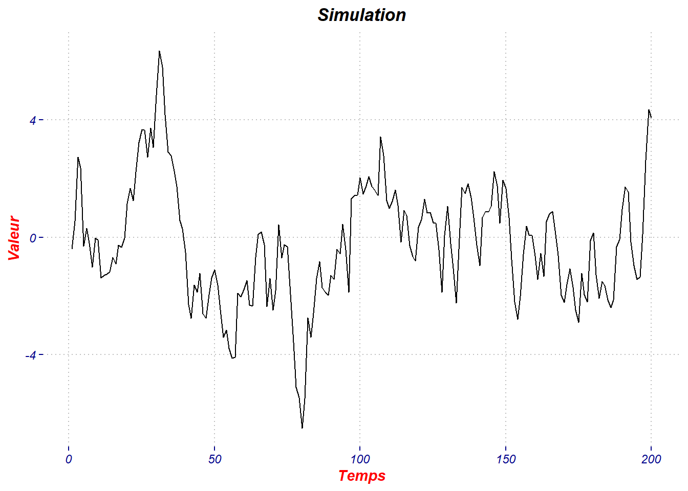
Question 2
Voici la forme de la fonction d’autocorrélation simple de notre simulation :
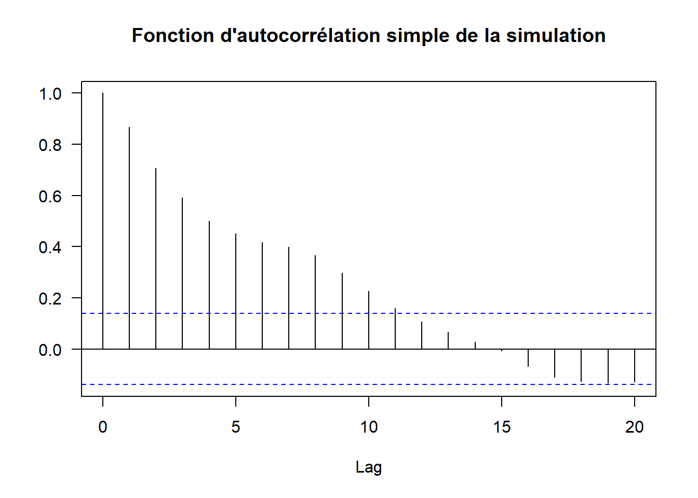
On remarque que les 11 premiers pics de la fonction d’autocorrélation simple sont significatifs, il y aurait donc une corrélation significative entre \(Y\) et les 11 dernières valeurs de \(Y\), cette même fonction a une décroissance plutôt exponentielle, cette fonction nous laisse supposer que nous faisons face à un modèle ARMA ou à un modèle AR.
Voici la forme de la fonction d’autocorrélation partielle de notre simulation :
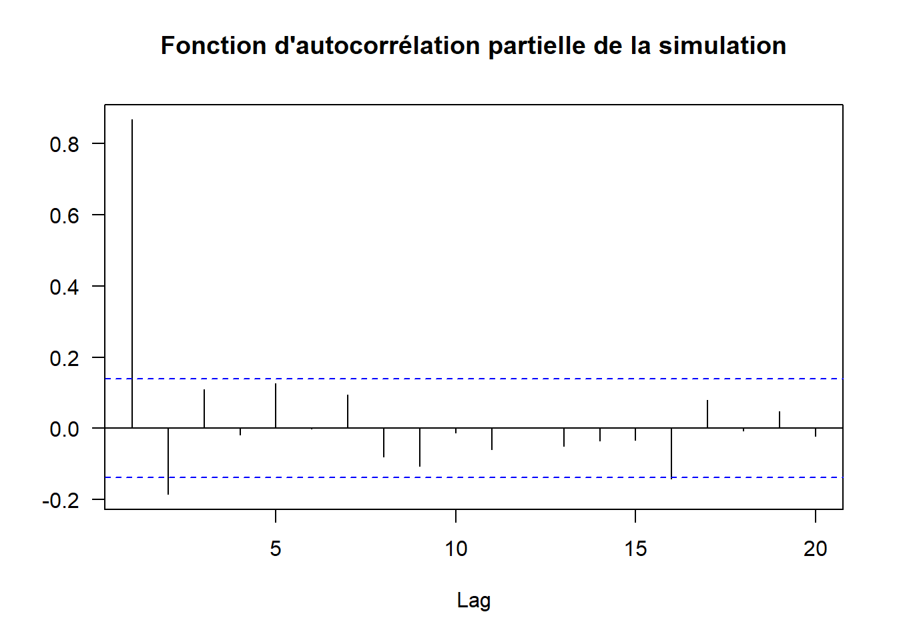
Seul les deux premiers pics de la fonction d’autocorrélation partielle sont significatifs, de plus celle-ci décroît de manière sinusoïdale, ces informations pourraient laisser penser à un AR d’ordre 2.
Question 3
La fonction d’autocorrélation partielle a une décroissance sinusoïdale à partir du \(1^{er}\) retard. Dans un soucis de parcimonie, nous préférons ajuster la simulation avec un modèle ARMA(2,1) :
arma2_1 <- arima(simulation,order = c(2,0,1))Nous avons les coefficients de ce modèle dans ce tableau :
| I | Coefficients | Std_Error | Résultats |
|---|---|---|---|
| ar1 | 0.3035 | 0.2045 | AIC = 558.66 |
| ar2 | 0.4726 | 0.1931 | sigma² = 0.9021 |
| ma1 | 0.7661 | 0.1670 | Log_likelihood = -274.3306 |
| intercept | -0.1066 | 0.5156 |
Nous avons donc un ARMA(2,1) de la forme :
\(Y_t = 0.3035Y_{t-1} + 0.4726Y_{t-2} + 0.7661\varepsilon_{t-1} - 0.1068\)
où tous les coefficicents sont significativement différent de 0 à l’exception de la constante. On notera aussi une variance \(\sigma² = 0.9021\)
Etudions à présent les résidus de ce modèle :
Pour commencer, voici une représentation graphique :
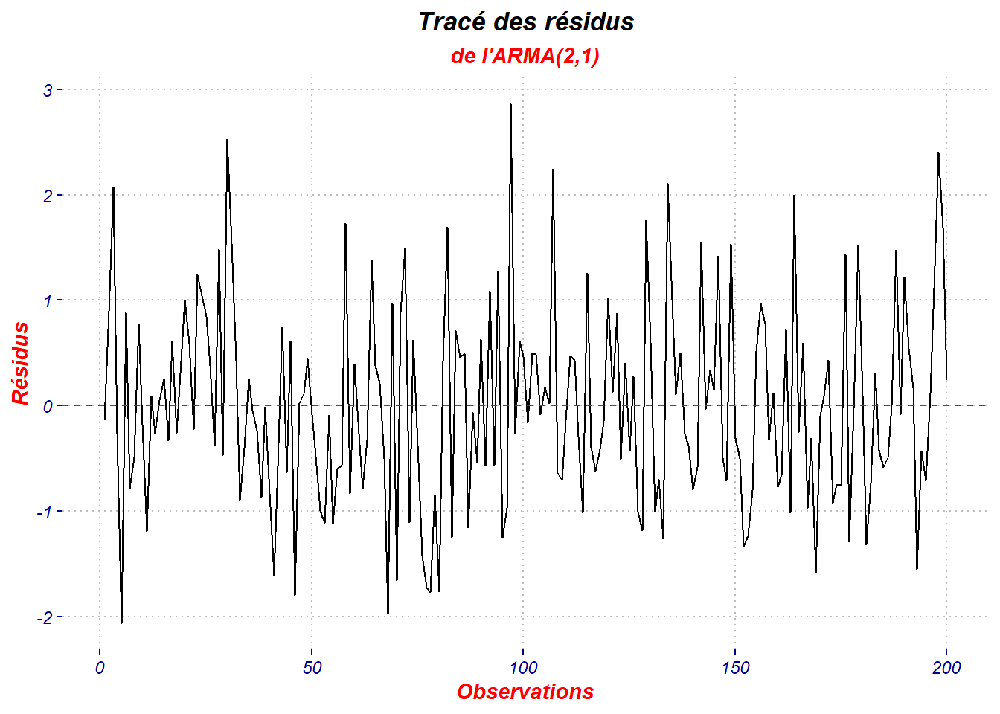
La forme des fonctions d’autocorrélation simple et partielle sont les suivantes :
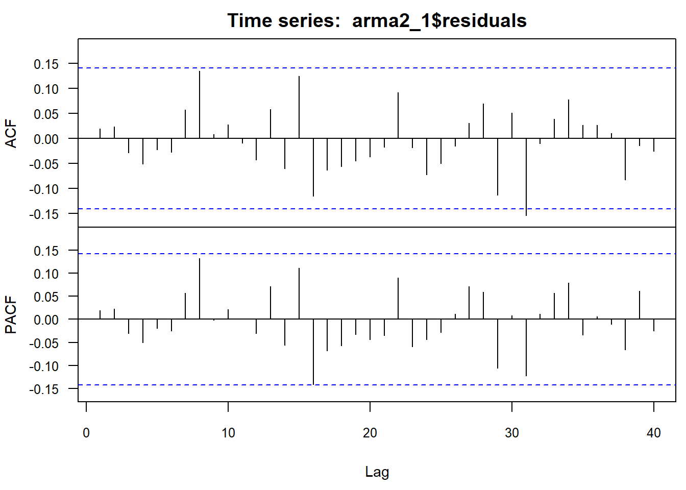
Le modèle ARMA(2,1) semble adapté à notre simulation, en effet le premier lag de ce modèle ne semble pas corrélé aux autres lags.
Question 4
On ajuste la simulation avec un modèle AR(3) :
AR3 <- arima(simulation,order = c(3,0,0))Nous avons les coefficients de ce modèle dans ce tableau :
| I | Coefficients | Std_Error | Résultats |
|---|---|---|---|
| ar1 | 1.0610 | 0.0702 | AIC = 562.03 |
| ar2 | -0.2856 | 0.1017 | sigma² = 0.9179 |
| ar3 | 0.0966 | 0.0721 | Log_likelihood = -276.0169 |
| intercept | -0.1045 | 0.5162 |
Nous avons donc un AR(3) de la forme :
\(Y_t = 1.0610Y_{t-1} - 0.2856Y_{t-2} + 0.0966Y_{t-3} - 0.1045\)
où tous les coefficicents sont significativement différent de 0 à l’exception de la constante. On notera aussi une variance \(\sigma² = 0.9179\).
Etudions à présent les résidus de ce modèle :
Pour commencer, voici une représentation graphique :
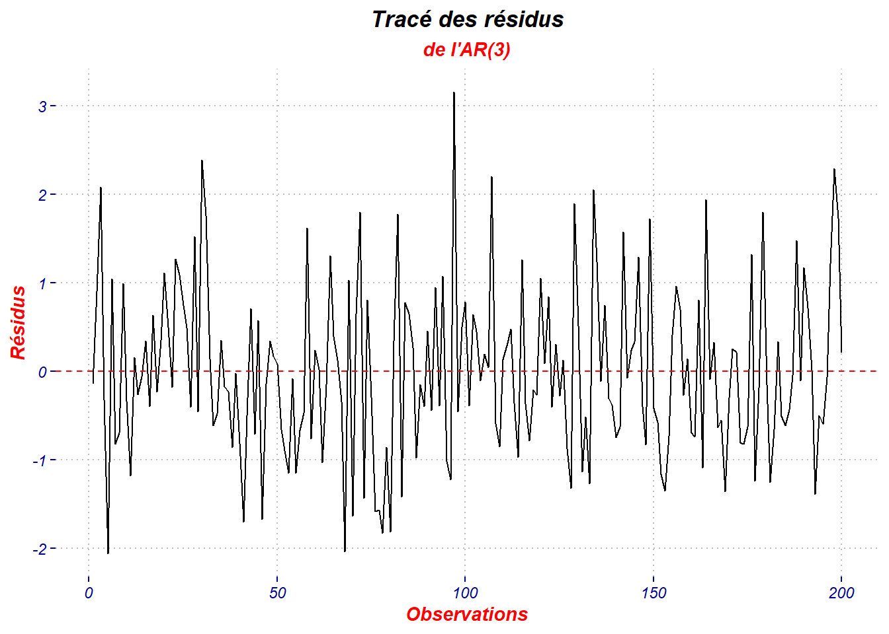
La forme des fonctions d’autocorrélation simple et partielle sont les suivantes :
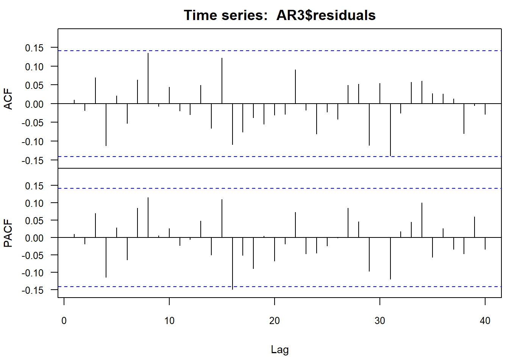
La forme des fonctions d’autocorrélations du modèle AR(3) semble démontrer par l’absence de corrélations significatives que cette modélisation semble plutôt adapté à la simulation, on notera tout de même la présence d’un pic significatif pour la fonction d’autocorrélation partielle et de plusieurs pics presque significatifs pour les deux fonctions.
On ajuste la simulation avec un modèle MA(3) :
MA3 <- arima(simulation,order = c(0,0,3))Nous avons les coefficients de ce modèle dans ce tableau :
| I | Coefficients | Std_Error | Résultats |
|---|---|---|---|
| ma1 | 1.1144 | 0.0696 | AIC = 589.17 |
| ma2 | 0.7491 | 0.0797 | sigma² = 1.0518 |
| ma3 | 0.3983 | 0.0564 | Log_likelihood = -289.5867 |
| intercept | -0.2072 | 0.2352 |
Nous avons donc un MA(3) de la forme :
\(Y_t = 1.1144\varepsilon_{t-1} + 0.7491\varepsilon_{t-2} + 0.3983Y_{t-3} - 0.2072\)
où tous les coefficicents sont significativement différent de 0 à l’exception de la constante. On notera aussi une variance \(\sigma² = 1.0518\)
Etudions à présent les résidus de ce modèle :
Pour commencer, voici une représentation graphique :
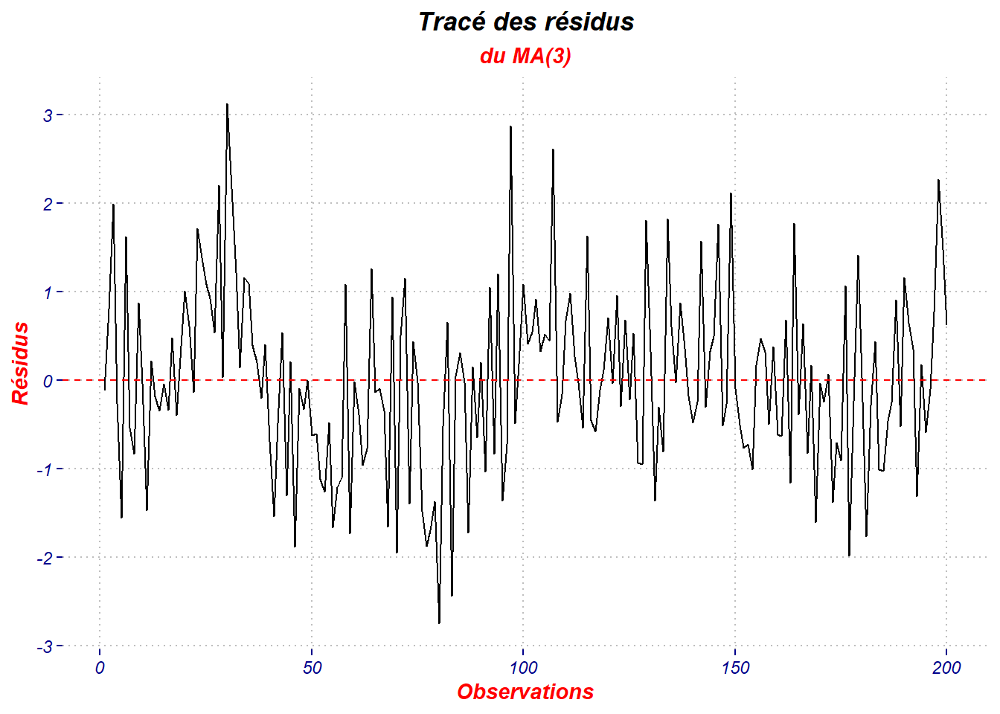
La forme des fonctions d’autocorrélation simple et partielle sont les suivantes :
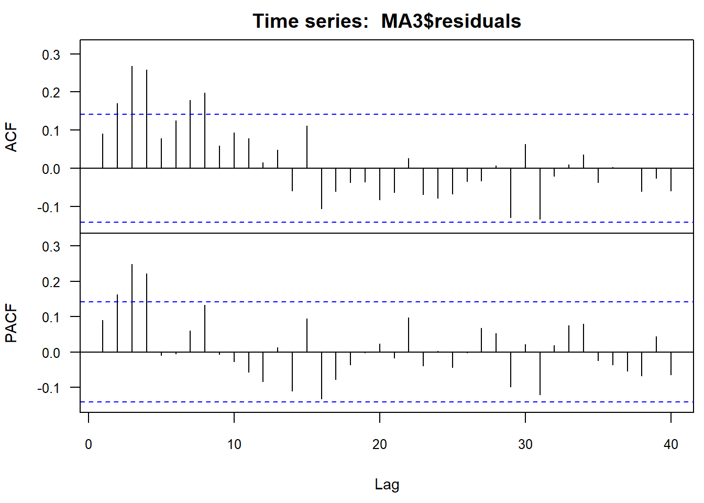
La forme des fonctions d’autocorrélations du modèle MA(3) semble démontrer par la présence de plusieurs corrélations significatives que cette modélisation ne semble pas adapté à la simulation.
Question 5
Pour determiner si nous sommes en présence de Bruit Blanc nous pouvons effectuer le test de Box-Pierce
B_test <- list(Box.test(arma2_1$residuals),
Box.test(AR3$residuals),
Box.test(MA3$residuals))| stat.X-squared | p_value | |
|---|---|---|
| Modèle ARMA(2,1) | 0.0732017 | 0.7867309 |
| Modèle AR(3) | 0.0179746 | 0.8933477 |
| Modèle MA(3) | 1.6425642 | 0.1999740 |
On remarque que les trois tests aboutissent sur des p-values élevées, indiquant donc que nous conservons l’hypothése de blancheur des résidus , et nous sommes donc en présence d’un bruit blanc dans les trois modèles.
On peut aussi effectuer un test de shapiro :
Shap_test <- list(shapiro.test(arma2_1$residuals),
shapiro.test(AR3$residuals),
shapiro.test(MA3$residuals))| stat.W | p_value | |
|---|---|---|
| Modèle ARMA(2,1) | 0.9867 | 0.0573 |
| Modèle AR(3) | 0.9836 | 0.0196 |
| Modèle MA(3) | 0.9938 | 0.5697 |
En prenant un seuil de significativité de 5%, on remarque que seul les résidus du modèle AR(3) sont un bruit gaussien.
Il nous reste à vérifier la stationnarité des modèles, pour cela nous allons effectuer le test de Dickey-Fuller dont les hypothèses sont les suivantes :
- \(H_0\) : Le processus n’est pas stationnaire
- \(H_1\) : Le processus est stationnaire
ur.df(arma2_1$residuals, lags = 20)
ur.df(AR3$residuals, lags = 20)
ur.df(MA3$residuals, lags = 20)| 1% | 5% | 10% | Test Stat | |
|---|---|---|---|---|
| ARMA(2,1) | -2.58 | -1.95 | -1.62 | -3.270578 |
| AR(3) | -2.58 | -1.95 | -1.62 | -3.250415 |
| MA(3) | -2.58 | -1.95 | -1.62 | -2.883262 |
Les trois tests de dickey-Fuller ont des statistiques de test inférieur aux différents seuils, ce qui conduit à rejeter l’hypothèse de non-stationnarité, donc les trois processus sont stationnaires.
Question 6
L’autre critère que l’on pourrait utiliser pour choisir entre les 3 modèles est le critère AIC (Criterium d’Information d’Akaike) qui cherche à trouver un équilibre entre l’ajustement du modèle aux données observées et la parcimonie du modèle. Il faut donc noter que ce critère pénalise les modèles utilisant un plus grand nombre de paramètres car sa minimisation conduit à préfèrer des modèles moins complexes qui expliqueraient aussi bien les données mais avec moins de paramètres. L’objectif fixé lorsque l’on utilise le critère AIC est la minimisation du score AIC donc les modèles avec les plus petits scores seront les plus performant avec ce point de vue.
\(AIC=−2×log(L)+2×k\)
où :
\(L\) est la fonction de maximum de vraisemblance du modèle (log-vraisemblance maximisée),
\(k\) est le nombre de paramètres estimés dans le modèle.
On remarque donc la pénalité subit par les modèles contenant plus de paramètres. La fonction du log-vraisemblance maximisée permettra de mesurer la qualité d’ajustement du modèle. On identifie donc un arbitrage entre qualité d’ajustement du modèle et parcimonie.
Pour conclure sur l’utilisation de ce critère, un modèle avec un AIC plus bas indique que le modèle a une meilleure capacité à expliquer les données tout en utilisant moins de paramètres. Il faut tout de même rester prudent avec son utilisation car il ne fournit pas d’indication absolue de la qualité d’ajustement du modèle.
Notre connaissance de la série \(Y_{t} = 0.8Y_{t-1} + 0.1Y_{t-2} + 0.3\varepsilon_{t-1} + \varepsilon_{t}\) nous inciterait à choisir un modèle ARMA(2,1) …
De plus c’est le modèle ARMA (2,1) qui dispose du score AIC le plus faible, 558.66, parmi les 3 modèles que l’on a testé, les résidus étant des bruits blancs pour les 3 modèles, on peut considérer que le modèle ARMA(2,1) est adapté pour représenter la série.
Question 7
auto <- auto.arima(simulation) | I | Coefficients | Std_Error | Résultats |
|---|---|---|---|
| ar1 | 0.8229 | 0.0469 | AIC = 558.18 |
| ma1 | 0.2642 | 0.0883 | sigma² = 0.9278 |
auto.arima nous suggère d’utiliser un modèle ARMA(1,1), d’ailleurs ce modèle fournit un AIC plus faible que le modèle ARMA(2,1).
Ce modèle prend la forme suivante :
\(Y_t = 0.8229Y_{t-1} + 0.2642\varepsilon_{t-1} + \varepsilon_t\)
où tous les coefficicents sont significativement différent de 0 à l’exception de la constante. On notera aussi une variance \(\sigma² =\) 0.9278.
Assurons-nous que ce modèle ARMA(1,1) soit bien adapté à la situation, nous allons étudier ses résidus :
Tout d’abord, voici une représentation graphique de ses résidus :
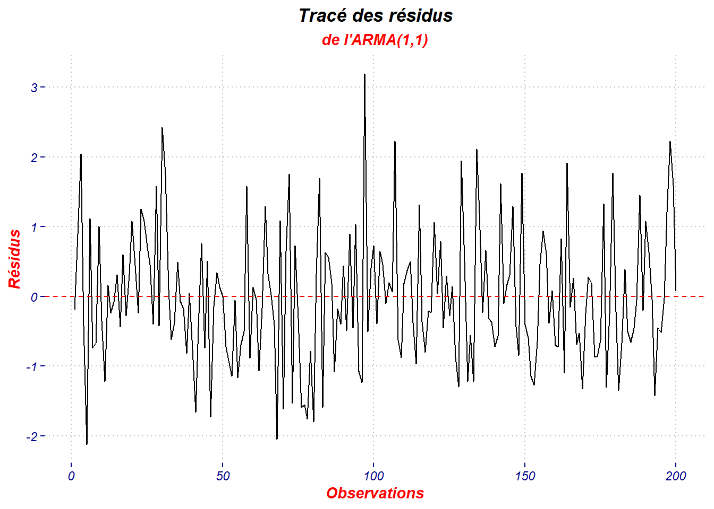
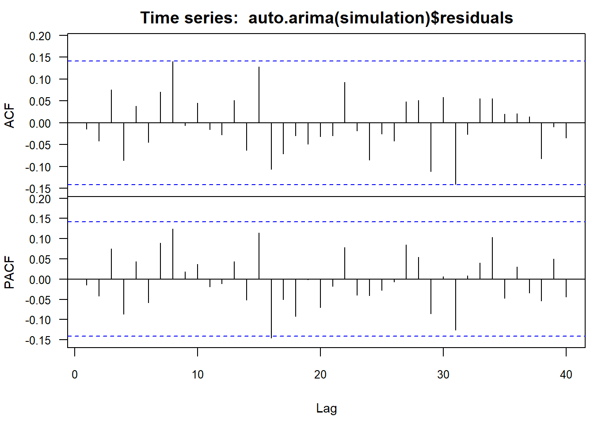
La forme des fonctions d’autocorrélations du modèle ARMA(1,1) semble démontrer par l’absence de corrélations significatives que cette modélisation semble plutôt adapté à la simulation, on notera tout de même la présence d’un pic significatif pour la fonction d’autocorrélation partielle et de plusieurs pics presque significatifs pour les deux fonctions.
Il nous reste à étudier la blancheur des résidus :
Box-Pierce test
data: auto$residuals
X-squared = 0.040059, df = 1, p-value = 0.8414La \(p_{value}\) de 0.8414 est en faveur de la blancheur des résidus, nous sommes donc en présence d’un bruit blanc.
Shapiro-Wilk normality test
data: auto$residuals
W = 0.98259, p-value = 0.01404La \(p_{value}\) de 0.014 démontre la présence d’un bruit gaussien si l’on se réfère à un seuil de significativité de 5%.
Il nous reste à vérifier la stationnarité du modèle, pour cela nous allons effectuer le test de Dickey-Fuller :
| Modèle | 1% | 5% | 10% | Test Stat |
|---|---|---|---|---|
| ARMA(1,1) | -2.58 | -1.95 | -1.62 | -3.174052 |
Le test conduit à rejeter l’hypothèse de non-stationnarité, donc le processus ARMA(1,1) est stationnaire.
Question 8
Ce résultat est assez perturbant car lors de la première question, nous avions simulé un modèle qui semblait être un ARMA(2,1) mais cette situation s’explique par le fait que le critère AIC favorise la parcimonie, et donc des modèles contenant moins de paramètres, tout en maintenant de la cohérence avec les données. Sachant cela, on identifie que le fait qu’un ARMA(1,1) contienne moins de paramètre que l’ARMA(2,1) pourrait entrainer un score AIC plus faible. La commande auto.arima étant programmé pour sélectionner le modèle contenant le score AIC le plus faible parmi ceux qu’elle teste, la commande finira par sélectionner un modèle ARMA(1,1) contenant moins de paramètres mais minimisant le score AIC.